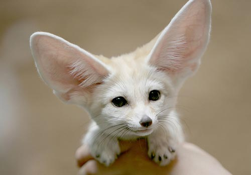
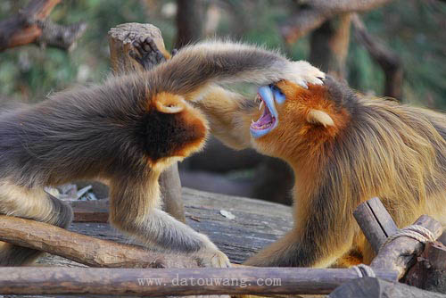

第一个
非洲大陆有近一半的陆地被沙漠所占据。沙漠是一些极其寂静的地方，乍一看起来，它们显得令人难以忍受的荒凉和恐怖，但在仔细体验观察之后，将会发现那里充满了生命。

第二个
非洲大陆有近一半的陆地被沙漠所占据。沙漠是一些极其寂静的地方，乍一看起来，它们显得令人难以忍受的荒凉和恐怖，但在仔细体验观察之后，将会发现那里充满了生命。
 第三个
第三个
非洲大陆有近一半的陆地被沙漠所占据。沙漠是一些极其寂静的地方，乍一看起来，它们显得令人难以忍受的荒凉和恐怖，但在仔细体验观察之后，将会发现那里充满了生命。